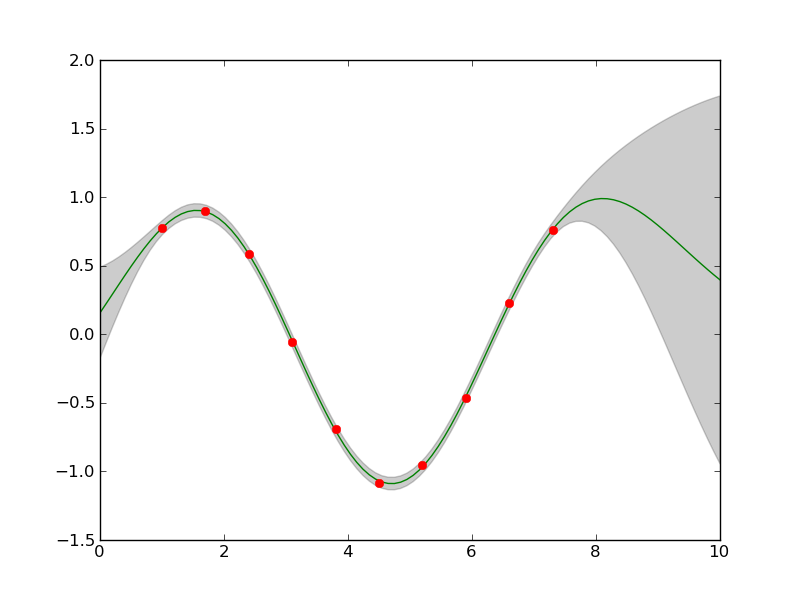

This Example shows the Squared Exponential CF (covar.se.SEARDCF) combined with noise covar.noise.NoiseISOCF by summing them up (using covar.combinators.SumCF).
First of all we have to import all important packages:
import pylab as PL
import scipy as SP
import numpy.random as random
Now import the Covariance Functions and Combinators:
from covar import se, noise, combinators
And additionally the GP regression framework (gpr and lnpriors for the priors):
import gpr as GPR
import lnpriors
For this particular example we generate some simulated random sinus data, just samples from a superposition of a sin + linear trend:
random.seed(1)
xmin = 1
xmax = 2.5*SP.pi
x = SP.arange(xmin,xmax,0.7)
C = 2 #offset
b = 0.5
sigma = 0.01
b = 0
y = b*x + C + 1*SP.sin(x)
dy = b + 1*SP.cos(x)
y += sigma*random.randn(y.shape[0])
y-= y.mean()
x = x[:,SP.newaxis]
The predictions we will make on the interpolation interval
X = SP.linspace(0,10,100)[:,SP.newaxis]
Our starting hyperparameters are:
dim = 1
logthetaCOVAR = SP.log([1,1,sigma])
hyperparams = {'covar':logthetaCOVAR}
Now the interesting point: creating the sumCF by combining noise and se:
SECF = se.SEARDCF(dim)
noise = noise.NoiseISOCF()
covar = combinators.SumCF((SECF,noise))
And the prior believes, we have about the hyperparameters:
#Length-Scale
covar_priors = []
covar_priors.append([lnpriors.lngammapdf,[1,2]])
for i in range(dim):
covar_priors.append([lnpriors.lngammapdf,[1,1]])
#Noise
covar_priors.append([lnpriors.lngammapdf,[1,1]])
priors = {'covar':covar_priors}
We do want all hyperparameter to be optimized:
Ifilter = {'covar': SP.array([1,1,1],dtype='int')}
Create the GP regression class for further usage:
gpr = GPR.GP(covar,x=x,y=y)
And optimize the hyperparameters:
[opt_model_params,opt_lml]=GPR.optHyper(gpr,hyperparams,priors=priors,gradcheck=True,Ifilter=Ifilter)
With these optimized hyperparameters we can now predict the point-wise mean and deviance of the training data:
[M,S] = gpr.predict(opt_model_params,X)
For the sake of beauty plot the mean and deviance:
gpr_plot.plot_sausage(X,M,SP.sqrt(S))
gpr_plot.plot_training_data(x,y)
The resulting plot is:
